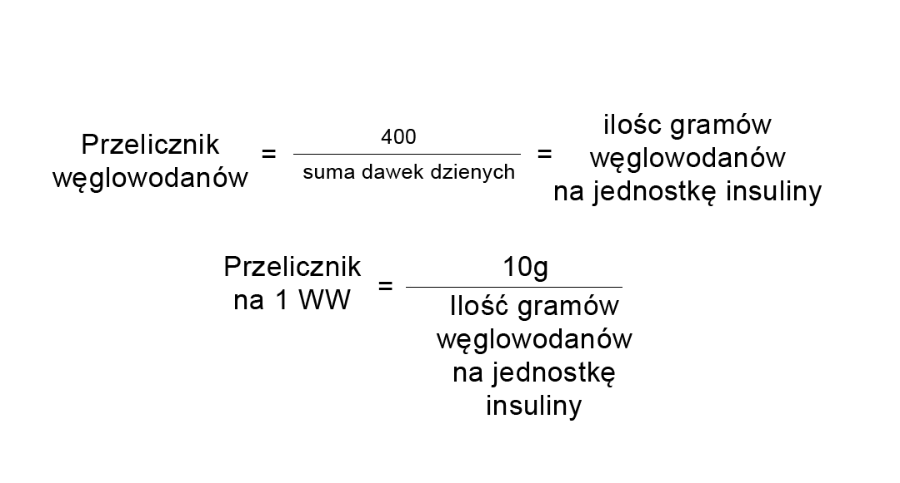

Przelicznik węglowodanów wskazuje, ile jednostek insuliny musimy podać na 1 wymiennik węglowodanowy (WW). W celu ustalenia przelicznika węglowodanów wg najnowszych rekomendacji stosuje się regułę "400", która wygląda następująco:

np. 400: 35j (suma dawek dziennych) = 11,4 g czyli 1j na 11,4 g. Aby obliczyć ile potrzebujemy insuliny na 1 WW (liczony w Polsce jako 10 g węglowodanów) wykonuje się następujące działanie: jeśli 1j na 11,4 g to Xj na 10g, czyli 10 : 11,4 = 0,8 j. Reasumując na 1 WW potrzebujemy 0,8 j insuliny.
Przelicznik węglowodanów to wskaźnik indywidualny dla każdego pacjenta, tak jak i suma dawek dziennych jest różna dla poszczególnych pacjentów. Pompa insulinowa Paradigm® Veo™ umożliwia wprowadzanie różnych przeliczników węglowodanów w różnych porach dnia. Niektórzy pacjenci mogą potrzebować więcej insuliny w godzinach porannych z powodu zwiększonej oporności na insulinę. W celu ustalenia właściwych parametrów zawsze należy skonsultować się z lekarzem prowadzącym. Pamiętajmy, że parametr ten powinien być co jakiś czas sprawdzany i aktualizowany. Zmiana może okazać się niezbędna, zwłaszcza w przypadku modyfikacji dawkowania insuliny.
* Matejko B, Grzanka M, Kieć-Wilk B, Małecki MT, Klupa T. Bolus calculator settings in well-controlled type 1 diabetes patients (glycated hemoglobin < 7%) treated with insulin pumps. J Diabetes Sci Technol. 2013 May 1;7(3):800-1. PubMed PMID: 23759415.